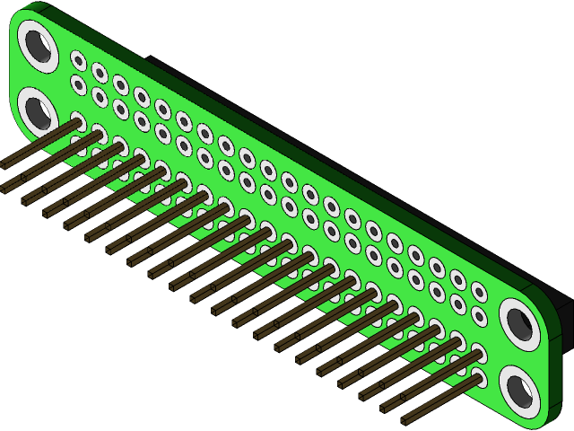

## **Lab 2** | Raspberry Pi + Navio2 Sensors ### Design of Autonomous Systems ### CSCI 6907/4907 - Section 86 ### Prof. **Sibin Mohan** --- ## Objectives - Interact with onboard sensors using the Navio2 shield. - Learn basic Linux shell commands to navigate and interact with Raspberry Pi. - Understand how sensors communicate with Raspberry Pi. - Integrate and use an external ultrasonic sensor to measure distance. --- ## Equipment Required - Raspberry Pi 4B (or similar) - Navio2 Shield - MicroSD Card (32GB or larger) - USB to UART Cable - Power Supply (USB-C) - HC-SR04 Ultrasonic Sensor - Jumper Wires - A Computer - Wi-Fi Network (GW network) --- ## Raspberry Pi GPIO Overview  - **40 GPIO Pins:** - **Power Pins (5V, 3.3V):** Power external devices. - **Ground Pins (GND):** Reference voltage. - **Data Pins:** Used for I2C, SPI, UART, and digital input/output. - **Interfaces:** - **I2C:** For communication with Navio2 sensors. - **SPI:** For high-speed devices. - **UART:** For serial communication. --- ## Navio2 Sensors Overview <img src="../img/hw/navio2.png" height="300"> ### Key Sensors: - **IMU (Accelerometer, Gyroscope, Magnetometer):** Motion and orientation tracking. - **Barometer:** Measures altitude. - **GPS:** Provides geolocation data. - **PWM Outputs:** Drives motors and servos. --- ## Understanding Communication Protocols - **GPIO:** Connects external devices to Raspberry Pi. - **I2C:** Communicates with onboard sensors like IMU. - **SPI/UART:** Used for high-speed or serial communication. - **Linux Device Files:** Sensors are accessed as `/dev` files in Linux. Example: - Accelerometer → `/dev/i2c-1` - Ultrasonic Sensor → GPIO pins `/dev/gpioXX` --- ## Setup Steps ### 1. Verify Raspberry Pi + Navio2 Setup - Assemble Navio2 shield on Raspberry Pi. - Secure using spacers and screws. - Run `sudo emlidtool` to verify Navio2 functionality. -v- ### 2. Read Onboard Sensor Data - Use libraries to interact with sensors (e.g., IMU). - Commands: - **Check sensors:** `sudo emlidtool` - **Access data files:** `/dev/i2c-1` -v- ### 3. Integrate External Ultrasonic Sensor - **Connections:** - `VCC` → `5V` - `GND` → `GND` - `TRIG` → GPIO18 - `ECHO` → GPIO24 --- ## Testing Sensor Communication ### Onboard Sensors - **Data Verification**: Confirm data output from the accelerometer, gyroscope, and GPS. - **Command for Testing**: ```bash sudo emlidtool ``` --- ### External Ultrasonic Sensor - **Measurement**: Use a Python script to measure distances. - **Validation**: Ensure real-time output values align with expected distances. --- ### Summary - Explored and tested **Navio2 onboard sensors** (e.g., IMU, GPS). - Configured and validated **Raspberry Pi GPIO communication**. - Integrated and utilized an **external ultrasonic sensor** for distance measurement. - Successfully verified **real-time data collection** from both onboard and external sensors.